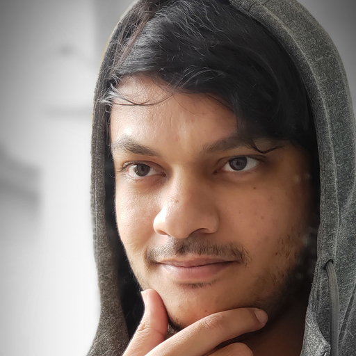

Abdihamid
Ali
Front-End Developer


Hello,
Here's who I am & what I do
I'm Abdi, a passionate and dedicated front-end web developer. What draws me to front-end development is the opportunity to transform complex ideas into elegant and accessible digital solutions. Just like solving intricate puzzles that require logical thinking and creative problem-solving, I see frontend development as a series of puzzles that I enjoy solving. Just as assembling the pieces of a puzzle creates a beautiful picture, I delight in piecing together code, design elements, and functionality to craft cohesive and captivating platforms.